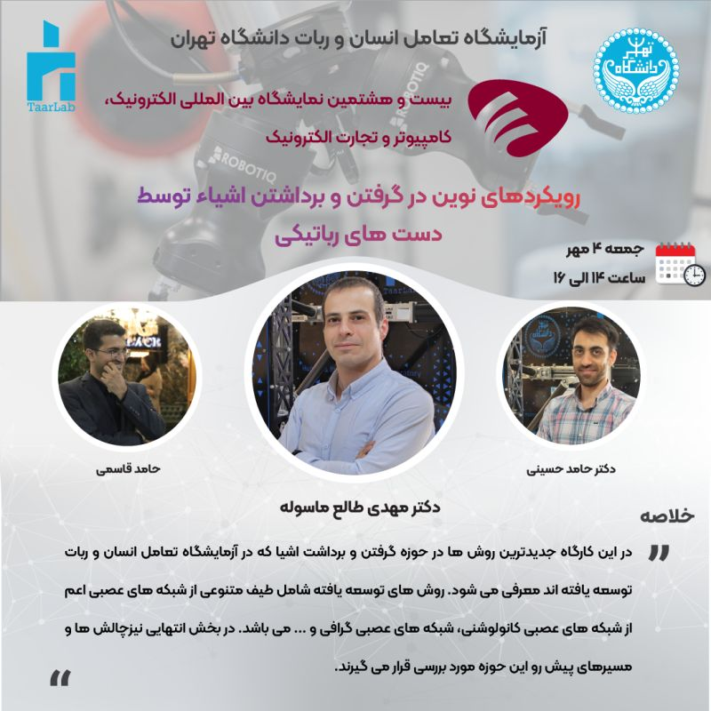

Sep 2025
New Approaches in Robotic Grasping and Object Manipulation
Workshop at the 28th Elecomp International Exhibition, Tehran — modern grasp detection and manipulation methods. With Dr. Mehdi Tale Masouleh and Hamed Ghasemi.